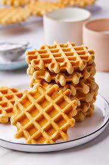

Waffle

Description
Sabah sabah kahvaltı mı edilir sorusuna cevap olarak
hayatıma girmiş waffle tarifim.
Ingredients
- 1 Egg
- 2 ts. sugar
- 1/2 cup oil
- 1 cup milk
- 1 and 1/2 cup flour
- a package baking powder
- a package vanilin
- 2 pinch cinnamon
Steps
- Mix Egg and Sugar
- Add milk and oil
- Firstly add b.powder, vanilin and cinnamon with sieve
- Lastly add flour with sieve
- Mix it and ready to machine